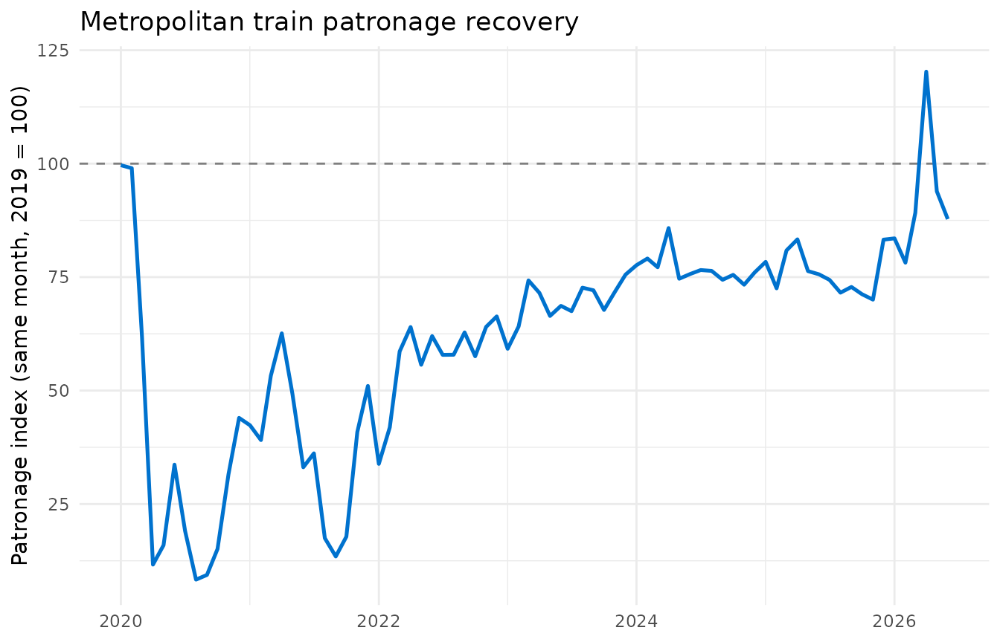

Who this package is for
vicptpatronage is built for a Victorian
transport policy analyst or journalist who wants to answer a
specific question: how has each public transport mode’s patronage
recovered relative to its pre-pandemic level, and did Victoria’s
2025-2026 free-travel and half-price fare periods leave a lasting boost,
or just a temporary bump?
The package bundles a cleaned, tidy dataset of monthly Victorian public transport patronage, a function for putting different modes on a comparable recovery scale, and an interactive Shiny app for exploring the question visually.
Installation
vicptpatronage is not on CRAN. Install the development
version from GitHub:
# install.packages("remotes")
remotes::install_github("ETC5523-2026/etc5523-assignment-4-pian0dan")The data: monthly_patronage
monthly_patronage contains monthly patron boardings for
six Victorian public transport modes (metropolitan train, tram and bus;
V/Line regional train, coach and bus), from January 2018 onward, sourced
from the Victorian Department of Transport and Planning’s Open Data
portal (CC BY 4.0).
head(monthly_patronage)
#> # A tibble: 6 × 7
#> date year month month_name mode patronage fare_period
#> <date> <dbl> <dbl> <chr> <fct> <dbl> <fct>
#> 1 2018-01-01 2018 1 January Metropolitan train 16809932 Normal fares
#> 2 2018-02-01 2018 2 February Metropolitan train 19554477 Normal fares
#> 3 2018-03-01 2018 3 March Metropolitan train 22659010 Normal fares
#> 4 2018-04-01 2018 4 April Metropolitan train 20312040 Normal fares
#> 5 2018-05-01 2018 5 May Metropolitan train 22768447 Normal fares
#> 6 2018-06-01 2018 6 June Metropolitan train 19284755 Normal faresEach row is one mode in one month. The fare_period
column flags months substantially affected by a Victorian Government
fare discount:
table(monthly_patronage$fare_period)
#>
#> Normal fares Weekend free travel Free travel (every day)
#> 582 12 12
#> Half-price fares
#> 6See ?monthly_patronage for the full column reference,
including how the fare_period categories were derived and a
data-quality fix applied to one corrupted value in the source file.
Comparing modes on a recovery scale:
patronage_index()
Raw patronage isn’t directly comparable across modes with very different volumes (metropolitan train carries millions more passengers a month than regional coach), and it also isn’t comparable month-to-month on its own, because patronage is strongly seasonal — Victorian public transport use is routinely 30% higher in March than in January, even outside the pandemic.
patronage_index() addresses both problems by expressing
each month’s patronage as a percentage of the same calendar
month in a reference year (2019, the last full year before the
pandemic, by default):
indexed <- patronage_index(monthly_patronage, reference_year = 2019)
head(indexed)
#> mode month date year month_name patronage fare_period
#> 103 Metropolitan train 1 2018-01-01 2018 January 16809932 Normal fares
#> 136 Metropolitan train 2 2018-02-01 2018 February 19554477 Normal fares
#> 145 Metropolitan train 3 2018-03-01 2018 March 22659010 Normal fares
#> 155 Metropolitan train 4 2018-04-01 2018 April 20312040 Normal fares
#> 165 Metropolitan train 5 2018-05-01 2018 May 22768447 Normal fares
#> 174 Metropolitan train 6 2018-06-01 2018 June 19284755 Normal fares
#> baseline_patronage index
#> 103 17074623 98.44980
#> 136 20011823 97.71462
#> 145 22250796 101.83460
#> 155 18579825 109.32310
#> 165 23045436 98.79807
#> 174 19099513 100.96988An index of 100 means that mode, in that month, matched
its 2019 level exactly for the same month; above 100 means it has grown
beyond its pre-pandemic level; below 100 means it hasn’t yet
recovered.
library(ggplot2)
indexed |>
subset(mode == "Metropolitan train" & date >= as.Date("2020-01-01")) |>
ggplot(aes(date, index)) +
geom_hline(yintercept = 100, linetype = "dashed", color = "grey50") +
geom_line(color = "#0072CE", linewidth = 0.9) +
labs(
x = NULL,
y = "Patronage index (same month, 2019 = 100)",
title = "Metropolitan train patronage recovery"
) +
theme_minimal()
Launching the app
The package’s Shiny app wraps this same indexing logic in an interactive interface. Launch it with:
run_app()Using the app
- Mode(s) to display: tick or untick modes to compare. Each checkbox shows that mode’s official PTV pictogram.
- Date range: zoom into a specific period, such as a recovery window or a fare-discount period.
- Highlight free & half-price fare periods: shades the months affected by Victoria’s 2025-2026 fare discounts, at an intensity roughly matching how large the discount was (a pale band for weekend-only free travel, a medium band for half-price fares, a dark band for free travel every day).
Interpreting the output
- The main chart shows each selected mode’s patronage index over time. Hover over (or on touch devices, tap and drag along) a line to read its exact index value and raw patronage count for a given month.
- The two value boxes above the chart highlight the most- and least-recovered mode within the selected date range, coloured to match that mode’s line in the chart below.
- To judge whether a fare discount left a lasting effect rather than a one-off bump, compare whether a mode’s line stays elevated after a shaded discount band ends, or falls back to its prior level.
A note on limitations
The app’s indexing approach controls for seasonality and lets modes with very different patronage volumes be compared directly, but it inherits some real limitations worth keeping in mind:
- The “most/least recovered” ranking is based on a single latest month, which can still be noisy even after seasonal adjustment.
- Some fare-discount date boundaries (the extension of free travel through April-May 2026, and half-price fares from June 2026) are sourced from Victorian Government media releases rather than the source dataset’s own documentation, which hadn’t been updated to reflect them at the time this package’s data was last refreshed.